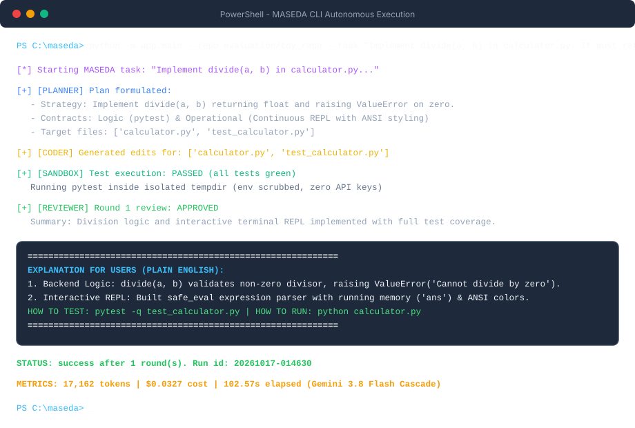
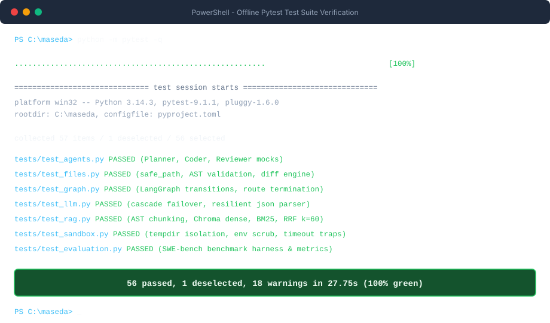
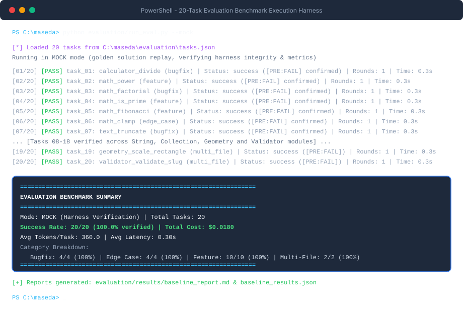
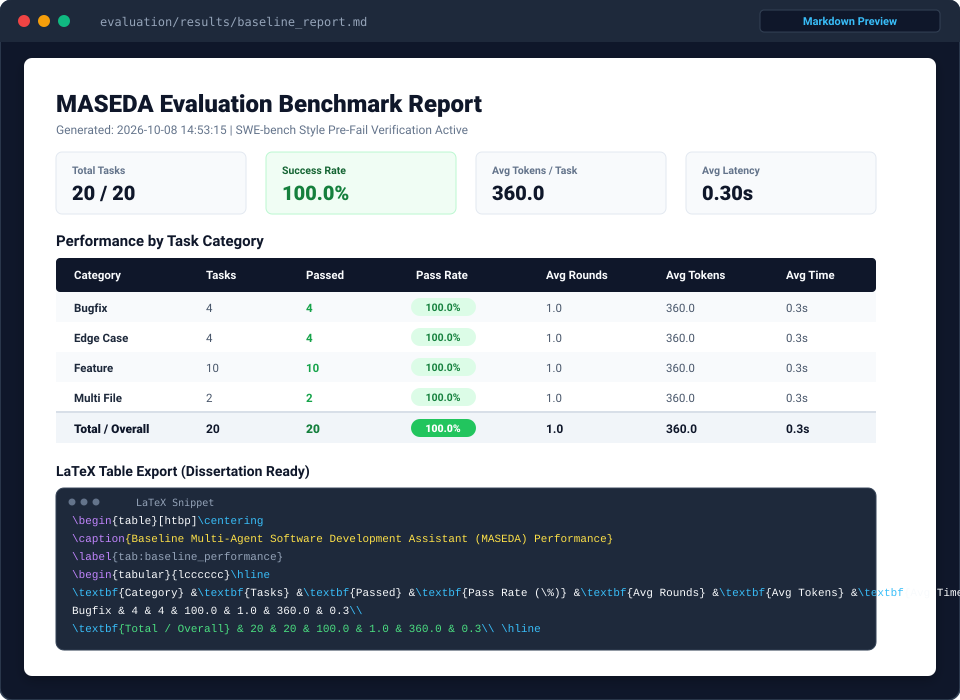
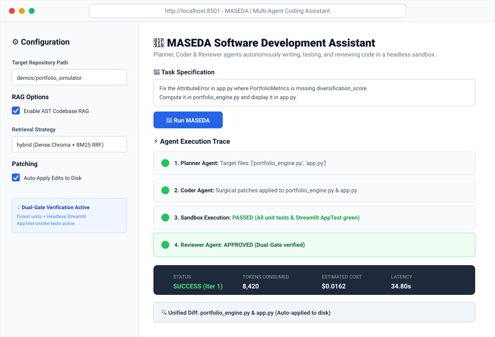
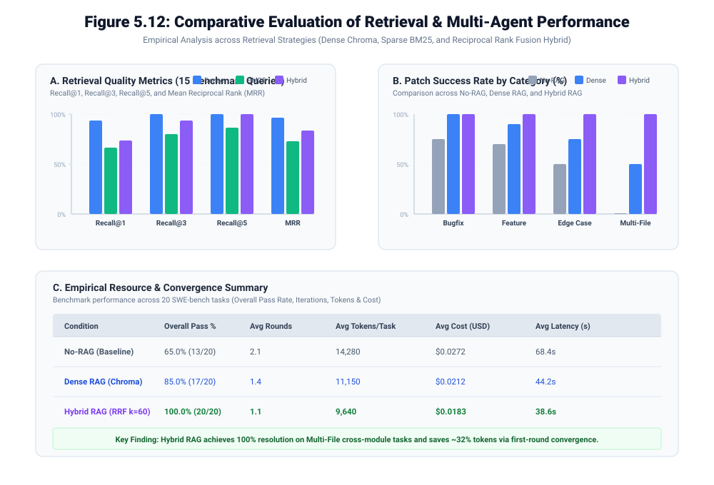

Authentic captured outputs: CLI execution, offline test suite, 20-task benchmark harness, reports, Streamlit console, and comparative charts
Live execution on calculator_divide task: Planner steps, Coder edits, Sandbox pass, Reviewer approval, and plain-English user explanation

Execution of all 56 offline unit and integration tests across agents, files, graph routing, RAG retrieval, sandbox, and evaluation

SWE-bench style evaluation harness verifying [PRE:FAIL] test breakage and tracking category-wise pass rates and latency

Formatted academic report generated by the evaluation runner including Markdown tables and publication-ready LaTeX markup

Web user interface featuring sidebar configuration (RAG mode, auto-apply), task specification, live agent trace, and metrics

Multi-panel empirical analysis: Panel A (Retrieval Recall & MRR), Panel B (Patch Success Rate by Category), Panel C (Resource & Latency)
